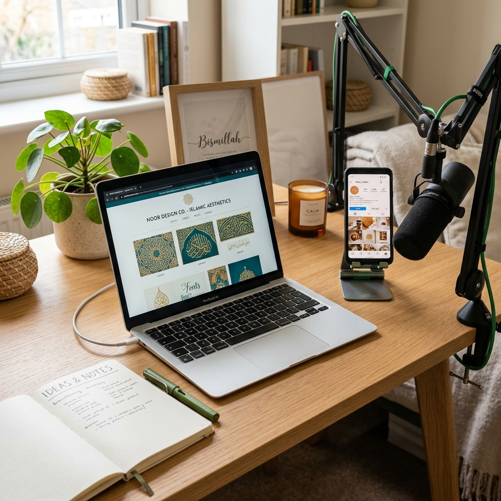

Dakwah di Era Digital: Peluang dan Tantangannya

Internet dan media sosial telah merubah lanskap komunikasi manusia secara fundamental. Hampir setiap orang kini terhubung dengan dunia digital melalui gawai dalam genggaman tangan mereka. Fenomena ini menghadirkan pergeseran besar dalam cara penyebaran informasi, termasuk penyampaian dakwah keagamaan.
Bagi umat Islam, masifnya perkembangan teknologi ini tidak boleh dipandang sebelah mata. Era digital menawarkan peluang dakwah yang belum pernah ada sebelumnya, sekaligus tantangan etika dan siber yang cukup kompleks. Menyadari hal tersebut, PPTQ AL WAHYU berkomitmen membekali para santri dengan kecakapan literasi digital agar mampu memanfaatkan media baru secara bijak dan produktif.
"Gunakan media sosialmu sebagai jalan meraih pahala jariyah. Satu video edukatif atau tulisan nasihat yang dibagikan ribuan kali akan terus mengalirkan kebaikan untukmu."
Peluang Dakwah Digital
Dunia siber membuka pintu-pintu kemudahan dakwah yang sangat luas, di antaranya:
- Jangkauan Tanpa Batas: Pesan dakwah kini dapat didengar dan dibaca oleh jutaan orang di berbagai belahan dunia secara instan tanpa terhambat batas geografis.
- Format Konten yang Variatif: Dakwah tidak lagi terbatas pada ceramah mimbar. Pesan kebaikan dapat dikemas kreatif dalam bentuk infografis, video singkat, podcast, artikel blog, hingga quote visual yang menarik.
- Interaksi Dua Arah: Memudahkan tanya jawab keagamaan secara interaktif melalui kolom komentar atau pesan langsung (DM), sehingga dakwah terasa lebih personal dan dekat dengan audiens muda.
Tantangan yang Harus Dihadapi
Di balik peluang yang besar, para pegiat dakwah digital juga harus waspada terhadap beberapa tantangan nyata:
- Banjir Informasi & Hoaks: Sulitnya memverifikasi kesahihan suatu konten keagamaan di internet. Dai digital dituntut memiliki bekal keilmuan yang valid dan referensi bersanad yang jelas.
- Etika Berkomentar (Netizen Ethics): Menghadapi perbedaan pendapat di kolom komentar dengan kepala dingin tanpa membalas dengan caci maki. Menjaga lisan digital (digital footprint) adalah bagian dari cerminan akhlak Islami.
- Algoritma Media Sosial: Memahami cara kerja algoritma agar konten-konten bermuatan positif tidak kalah bersaing dengan konten-konten unfaedah (tidak bermanfaat) yang viral.
Melalui program kepemimpinan dan keterampilan IT, santri PPTQ AL WAHYU diajarkan dasar-dasar pembuatan konten dakwah, penyuntingan video, serta penulisan kreatif agar mereka mampu menjadi garda terdepan penyebar kedamaian Islam di era digital.